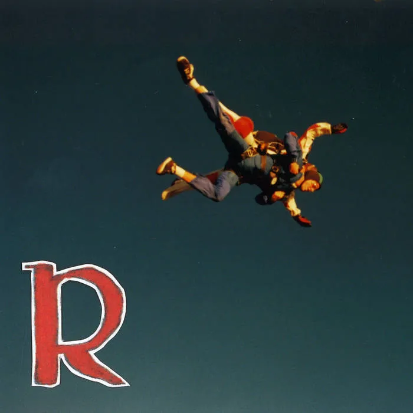

Welcome to Jackson's Internet Garden
The opposite of a
portfolio website.

"What is an Internet Garden?"
Well, that's a good question, Stranger!
James' Coffee Blog
first brought this concept on to my radar. The way they describe it
is more like an idea, where, while some people take the time and
energy to tend to their plants in a garden, they received the
comment that the way they look after and care for their websites is
like internet gardening. And I really liked the correlation there,
it reminded me of the carefree nature that we are allowed in the
indieweb. You can display interests that are personal and meaningful
to you.
I really enjoy the aesthetics of the early internet. I love the
creativity and ingenuity that comes from only having a few resources
to build what you want. It was also a time before ads festered in
every nook where your eyes wander on a webpage. So when designing my
Garden here, this was something that was important that I tried and
portray, because that's the kind of website I would like to visit.
It’s a part of the web called the
Quiet Web, as dubbed by Brian Koberlein. It’s a part of the web that is
detached from the external resources. There are no ads, no
WordPress, no SEO optimization. I wanted something quiet and
interesting, a corner of the web that I can claim as my own.
I hope that through this site, my Garden on the Internet, I can
express how fun the indie web can be, and a call to explore the
Quiet Web, there are so many fun and interesting websites to find
and plenty of space for more to join. Please have fun clicking
around and seeing what you find, and feel free to inspect element if
you are curious how I did something. I've tried to document it as
best as I can. ˙ᵕ˙
Featured Web Posts


2005 Apple EMac Restoration
Test flavor text
Originally something I saw on Facebook Marketplace, I couldn't resist its beautiful CRT monitor and at only $25 I had to bite. The only problem is, it doesnt boot to the OS. However I believe this to be totally fixable. Track my progress and see what else I have done with the Emac my reading more here.

Rocket - R is for Rocket (2025)
Alternative/Indie
A very charming rock band reminiscent of late 90's and early 2000's rock/post-punk. This record has a lot of personality and I found myself to be a big fan of the band overall. if you would like to hear more detail about the standout tracks and why I like this band, then click to read the post.

Collage of Images I Like
Image Board
I really just wanted a place to put a collection of images that I find online and like. I urdge anyone who likes any of the art shown under this page to please click on the images, as it will redirect you to the source of the image, so that you can find the creator and give them the proper love they deserve.